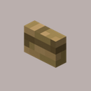

buttons

Description
A button is a non-solid block which can provide temporary redstone power. Buttons can be
mined with any tool. To place a button, use the "Use Item/Place Block" control while aiming
at the surface to which it should be attached. Buttons are usually in an inactive state,
but can be temporarily activated by players. To activate a placed button, use the
"Use Item/Place Block" control. A wooden button can also be activated by a fired arrow.
ingredients
Wooden: 1x wood plank
Stone: 1x stone
Gives you...
1x button
 mechanical
mechanical